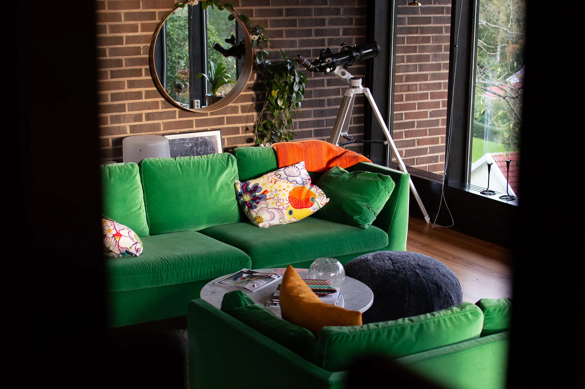

Inga rum är lika.
Det är hela poängen.
Olika människor, olika behov. Här är några av de hem, arbetsplatser och varumärkesmiljöer jag har fått hjälpa till att forma.

Ord från en kund
Didriksons HQVi är väldigt glada för att vi tog beslutet att vända oss till Kajsa och kan varmt rekommendera henne för liknande uppdrag.Utdrag ur kundomdömet · Läs originalet ↗